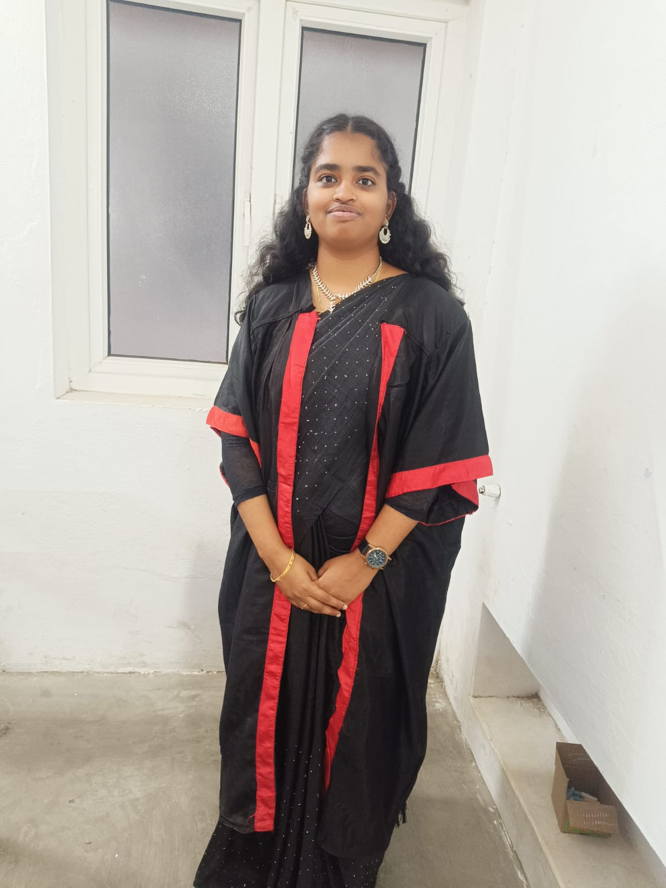

Welcome to my portfolio
Passionate Data Science postgraduate with strong knowledge in Python, Machine Learning, Data Analytics, and Web Development. Skilled in developing intelligent and data-driven solutions using AI technologies. Completed internships in AI/ML and Full Stack Development with hands-on experience in real-world projects. Interested in Data Analyst, Data Scientist, and AI Engineer roles where I can apply analytical thinking, problem-solving, and programming skills to create impactful solutions and continuously grow in the field of Data Science.

Who I Am
I'm a Master of Data Science student at Holy Cross College (Autonomous), Tiruchirappalli, with a strong foundation in Python, Data Analysis, and Machine Learning. Currently gaining hands-on industry experience through an AI & ML internship at FrontierWox Tech Private Limited.
M.Sc. Data Science (2025 – 2027)
Holy Cross College, Tiruchirappalli
AI & ML Intern at FrontierWox Tech
May 2026 – Aug 2026 (On-site, Trichy)
Seeking opportunities to apply ML expertise and build data-driven solutions.
Academic Background
Holy Cross College (Autonomous), Tiruchirappalli
Cauvery College for Women (Autonomous), Trichy
What I Know
Programming
Data & ML
Tools & Soft Skills
Project
A web-based application to manage student information efficiently across three role-based modules — Admin, Faculty, and Student — with secure logins, registration, profile management, and quick search.
Work History
FrontierWox Tech Private Limited, Trichy
Infyro, Trichy
E Soft IT Solution, Trichy
Achievements
Foundations and Applications of Data Science
"E-Commerce Sales Forecasting Using Machine Learning Algorithm" — International Conference
Bridging Tradition and Technology
Enhancing Soft Skills & Personality · Big Data Computing
Get In Touch